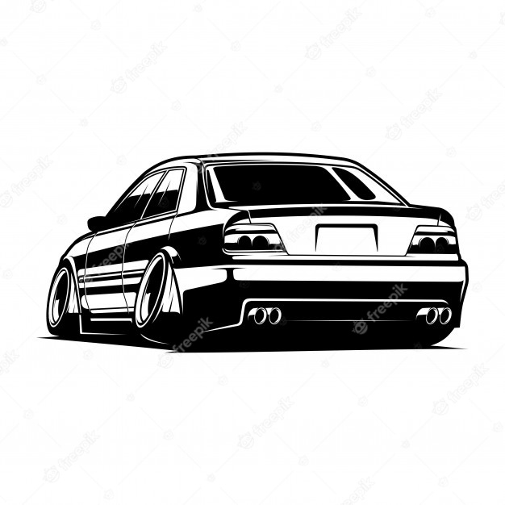
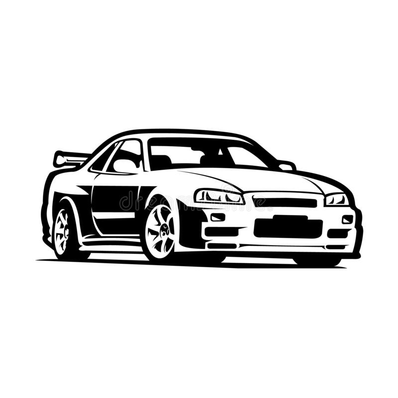
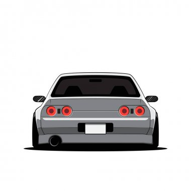
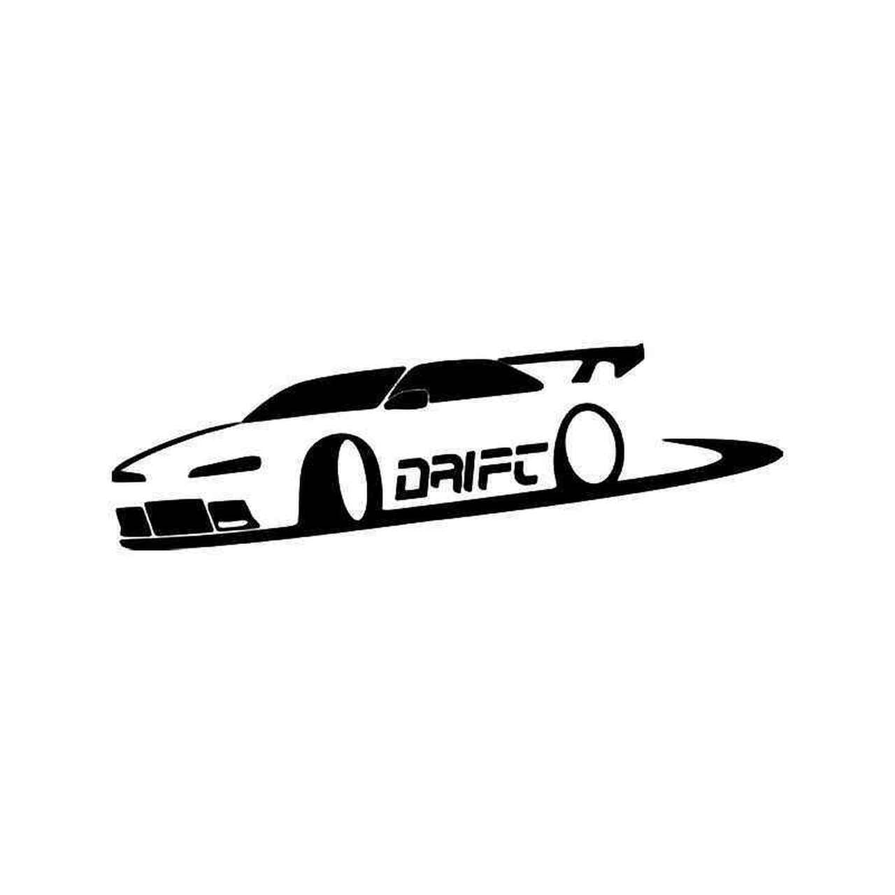
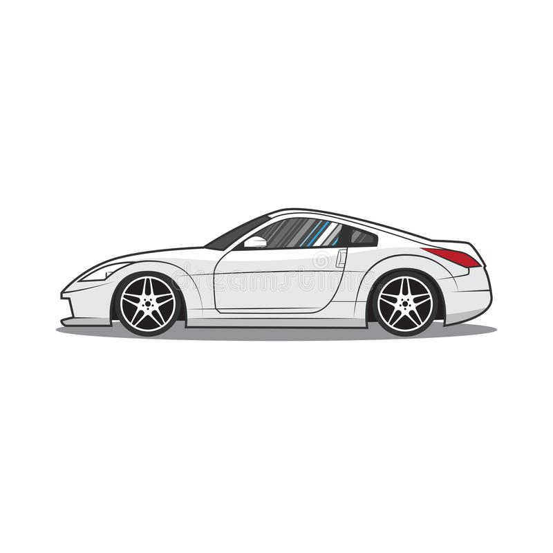
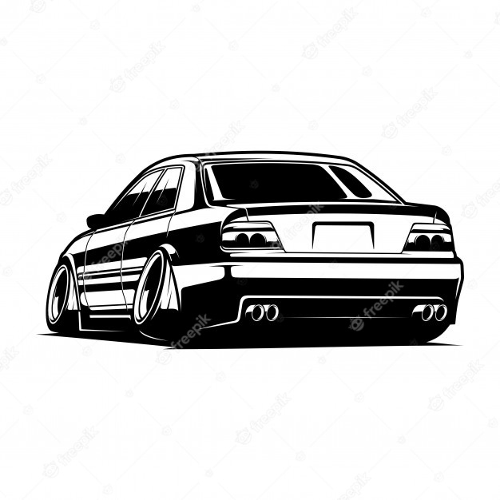
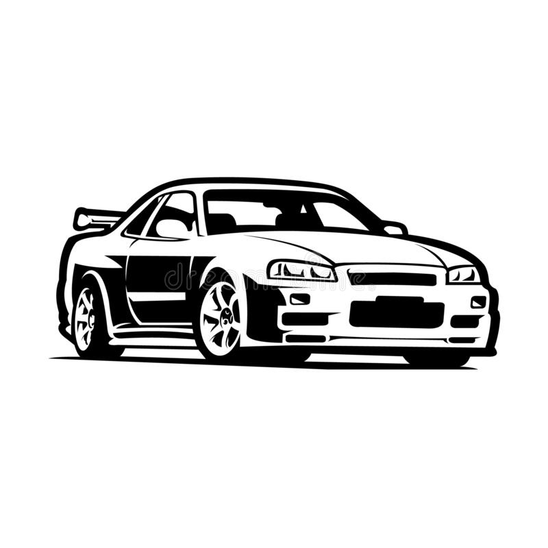
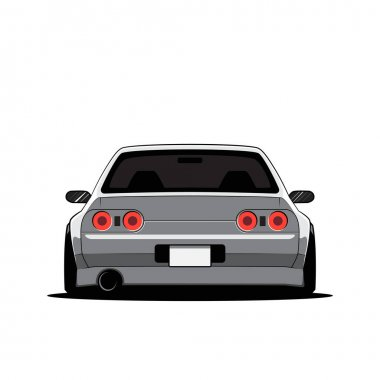
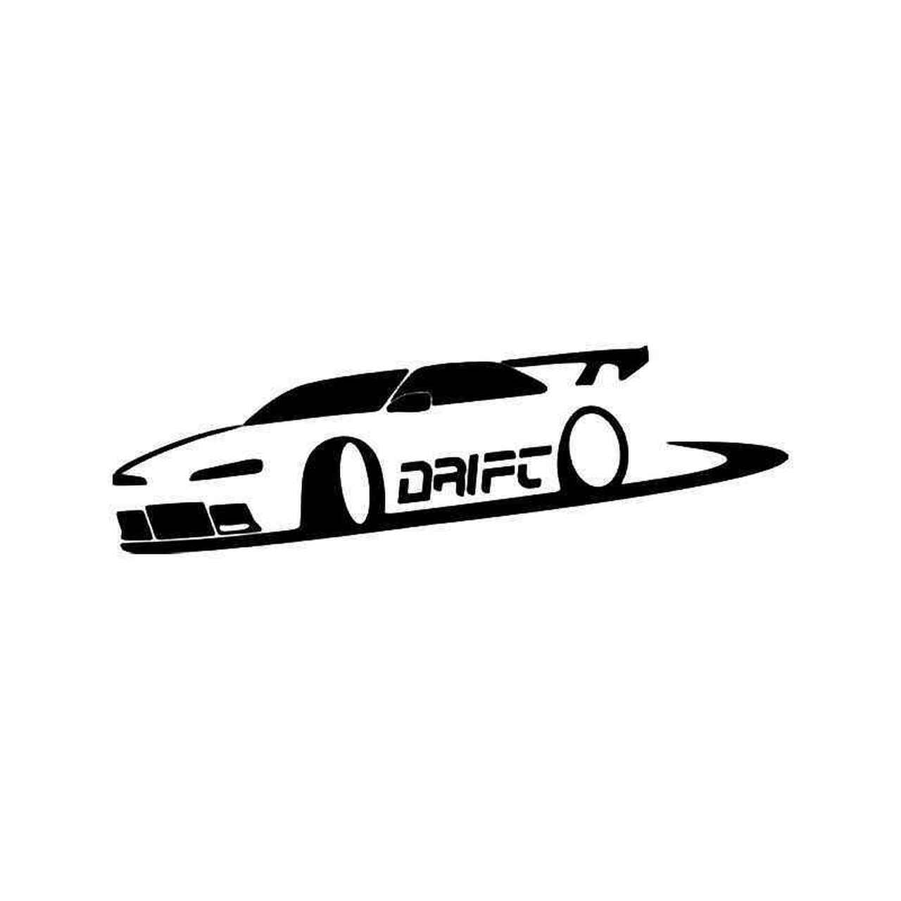
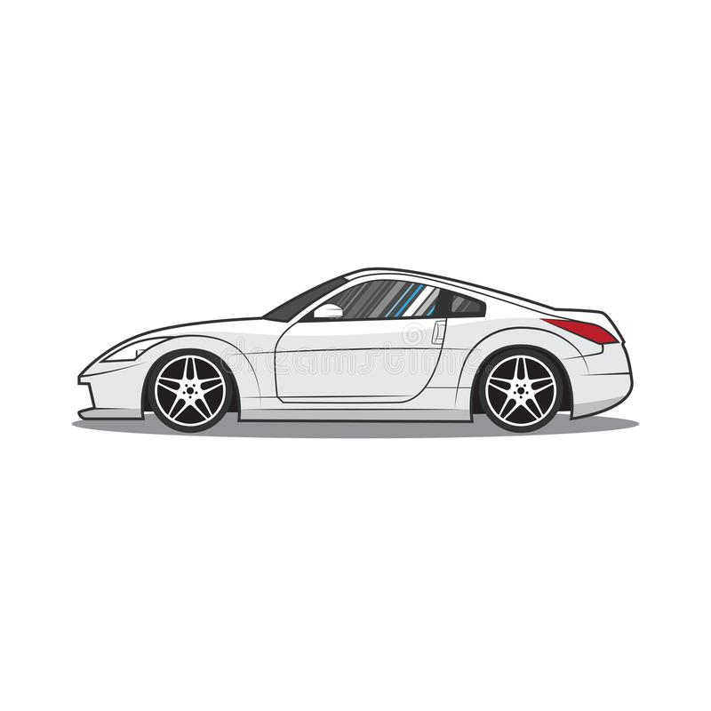

photo credit to jdmimporteurope facebook group
photo credit to jdmimporteurope facebook group
 









The Subaru WRX is an all-wheel drive sport compact car manufactured by Subaru, originally based on the Impreza created for the World Rally Championship in 1992.

The R34 Skyline GT-R was introduced in 1998, and was available from 1998 to 2002. A technologically advanced display unit set the model apart, while it's RB26DETT twin-turbo I6 engine produced impressive horsepower.
The Honda NSX, marketed in North America as the Acura NSX, is a two-seat, mid-engine coupe sports car manufactured by Honda. The origins of the NSX trace back to 1984, with the HP-X (Honda Pininfarina eXperimental) concept, which was a mid-engine 3.0 L V6 engine rear wheel drive sports car.
The Mark IV Toyota Supra was offered with two different engine options; a naturally aspirated 2JZ-GE, 3.0 litre, straight 6 with 220 horsepower and 210 ft/lbs of torque, and a 2JZ-GTE 3.0 litre twin turbocharged straight 6 with 320 horsepower and 315 ft/lbs of torque.